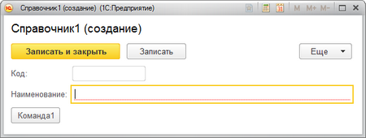
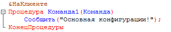
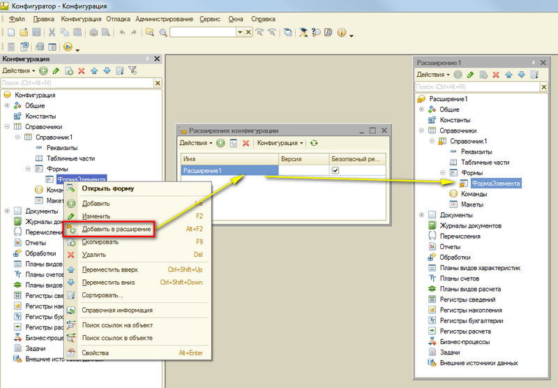
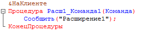
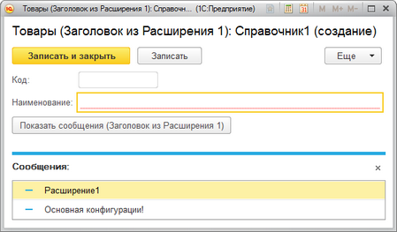
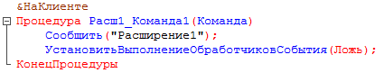
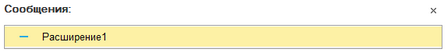
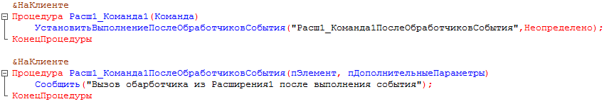
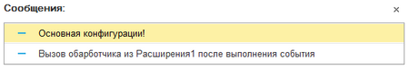

Какие возможности предоставляет механизм?! Изменять существующие управляемые формы, добавлять отчеты и обработки, добавлять и изменять состав подсистем. И всё это не изменяя конфигурации. Даже не снимая её с поддержки. Но! Есть нюанс - режим совместимости конфигурации должен быть отключен!
Расширение , является своего рода оболочкой для существующей конфигурации в рамках сеанса пользователя. Пока только эта "оболочка" может обволакивать такие объекты конфигурации, как управляемые формы, роли и подсистемы. А так же иметь свои собственные объекты, такие как отчет, обработка или подсистема.
Рассмотрим пример замены обработчика кнопки в форме элемента справочника.

В основной конфигурации, код обработчика кнопки:

Заменим обработчик на свой. Для этого позаимствуем форму справочника в своё расширение:
Находим в дереве основной конфигурации форму, в контекстном меню выбираем команду "Добавить в расширение". Откроется диалог управления расширениями. Добавим в него новое расширение и выберем.
Откроется дерево нового расширения с позаимствованной формой.

Форма та же, что и в основной конфигурации, но текст модуля отсутствует. Создадим новый обработчик нашей кнопки:

Запускаем конфигурацию на проверку, выполняем команду и видим следующий результат:

Наша команда последовательно вызвала обработчик из расширения и обработчик основной конфигурации. Не совсем то, что мы ожидали. Нам не нужно вызывать обработчик из основной конфигурации. Поправим код нашей процедуры, добавив метод УстановитьВыполнениеОбработчиковСобытия

Результат желанный:

Если хотите перехватить событие, ПОСЛЕ выполнения обработчиков, то есть метод УстановитьВыполнениеПослеОбработчиковСобытия

В результате:

Если мы добавим ещё одно расширение, то сперва вызовется обработчик 2-го расширения, затем 1-го, потом уже основной.
Диалог управлением можно вызвать в режиме конфигуратора через меню Конфигурация->Расширения конфигурации. В режиме предприятия Все функции -> Стандартные ->Управление расширениями конфигурации.